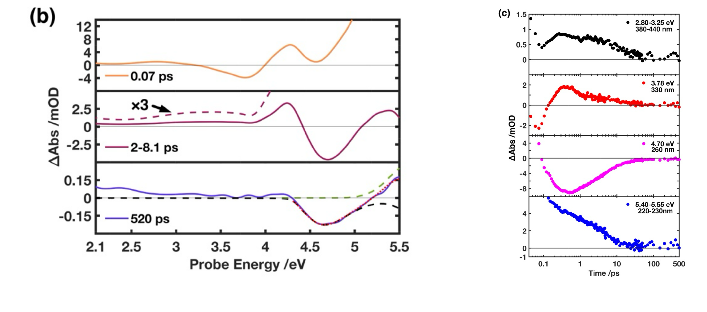

        <section>
          <h3 style="margin: 0 0 0.35em;">The Evidence: Three Species, One Measurement</h3>
          
          <div style="font-size: 0.36em; margin-top: 0.4em;">
            <div class="col-box" style="border: 1px solid #ddd; border-radius: 8px; padding: 0.6em 0.9em;">
              <ul style="margin: 0; padding-left: 1.2em;">
                <li>&lt;100 fs: excited state decays &rarr; tens of ps: twisted intermediate decays ($\tau\approx$23 ps) &rarr; 520 ps: photohydrate remains</li>
              </ul>
            </div>
          </div>
          <p class="slide-footnote"><a href="https://doi.org/10.1021/acs.jpclett.5c04072">Godínez Castellanos <em>et al.</em>, <em>J. Phys. Chem. Lett.</em> <strong>17</strong>, 2634&ndash;2643 (2026)</a></p>
          <aside class="notes">
            <ul>
              <li>Panel (b) spectral slices at 0.07 ps, 2-8.1 ps (x3 for clarity, showing the twisted-intermediate band peaking at 3.42 eV), and 520 ps (photohydrate signature, dashed lines are reference ground-state DMU and photohydrate spectra scaled to reconstruct the data).</li>
              <li>Panel (c) kinetic traces: black = twisted intermediate rise/decay, red = stimulated emission/hot ground state, magenta = ground-state bleach at 4.70 eV recovering by 35 ps, blue = hot ground-state cooling + residual photoproduct absorption at 520 ps.</li>
              <li>Quantum yield for photohydrate extracted from the 520 ps spectrum: 0.045, in reasonable agreement with the literature value of 0.013 (Fisher & Johns).</li>
              <li>This is the punchline slide — it's the reconstruction that lets you assign three distinct species (hot ground state, twisted intermediate, photohydrate) purely from one continuous broadband measurement.</li>
            </ul>
          </aside>
        </section>
